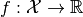
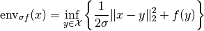
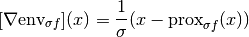
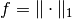
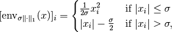

MoreauEnvelope¶
-
class
odl.solvers.functional.default_functionals.MoreauEnvelope(functional, sigma=1.0)[source]¶ Bases:
odl.solvers.functional.functional.FunctionalMoreau envelope of a convex functional.
The Moreau envelope is a way to smooth an arbitrary convex functional such that its gradient can be computed given the proximal of the original functional. The new functional has the same critical points as the original. It is also called the Moreau-Yosida regularization.
Note that the only computable property of the Moreau envelope is the gradient, the functional itself cannot be evaluated efficiently.
See Proximal Algorithms for more information.
Notes
The Moreau envelope of a convex functional  multiplied by a scalar
 is defined by
is defined by
The gradient of the envelope is given by

Example: if , then

which is the usual Huber functional.
References
Attributes: adjointAdjoint of this operator (abstract).
convex_conjConvex conjugate functional of the functional.
domainSet of objects on which this operator can be evaluated.
functionalThe functional that has been regularized.
grad_lipschitzLipschitz constant for the gradient of the functional.
gradientThe gradient operator.
inverseReturn the operator inverse.
is_functionalTrueif this operator’s range is aField.is_linearTrueif this operator is linear.proximalProximal factory of the functional.
rangeSet in which the result of an evaluation of this operator lies.
sigmaRegularization constant, larger means stronger regularization.
Methods
_call(x[, out])Implementation of the operator evaluation. bregman(point, subgrad)Return the Bregman distance functional. derivative(point)Return the derivative operator in the given point. norm([estimate])Return the operator norm of this operator. translated(shift)Return a translation of the functional. -
__init__(functional, sigma=1.0)[source]¶ Initialize an instance.
Parameters: - functional :
Functional The functional
fin the definition of the Moreau envelope that is to be smoothed.- sigma : positive float, optional
The scalar
sigmain the definition of the Moreau envelope. Larger values mean stronger smoothing.
Examples
Create smoothed l1 norm:
>>> space = odl.rn(3) >>> l1_norm = odl.solvers.L1Norm(space) >>> smoothed_l1 = MoreauEnvelope(l1_norm)
- functional :